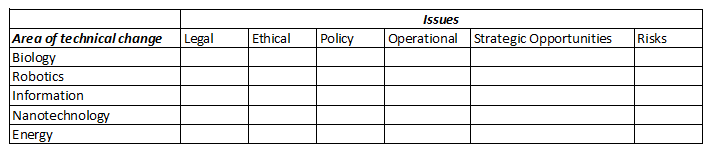

After completing this assignment you will be able to explain and make use of:
The purpose of this assignment is review and reflect on what you are learning by reading 'Thank You for Being Late'.
As you read Chapter 7-Just Too Damned Fast of 'Thank You for Being Late' think about and answer these questions.
We will discuss this material during class.
Exercise 1-Chapter 7

Refer to the figure above, which is based on the discussion on pages 198 to 201. Friedman mentions the relation between these 5 BRINE areas of increasing technical change and the issues they will pose that must be addressed. Discuss with classmates the intersection of one of these Areas and Issues (example-Robotics and Ethical) and what can be done to address the coming changes.
1. (50) Discuss with classmates the intersection of one of these Areas and Issues (example-Robotics and Ethical) and what can be done to address the coming changes.
This chapter discusses turning Artifical Intelligence into Intelligent Assistants. There are many important points:
2. (50) Visit Launchcode.org , create an account, and see what skills you need to become a computer programmer. After reviewing your learning journey, do you feel that this type of Intelligent Assistant could be adapted for people interested in other career paths?
Control vs Kaos
Friedman explores geopolitics and many other topics such as:
3. (50) On page 297 Friedman relays the story of the 2014 Ebola outbreak in West Africa and the rapid $3B, 3,000 soldier United States response that stopped the outbreak. Considering the current mood in the United States, provide a brief statement on whether you think the United States will remain the last best hope to ensure world hope and world stability.
Mother Nature as Political Mentor
Friedman considers how lessons from Mother Nature can be applied to solve seemingly intractable political problems. He discusses concepts such as:
4. (50) On pages 328 through 336 Friedman lists 18 potential policies. Which is your favorite?, and provide a brief explanation why.
Is God in CyberSpace?
Friedman considers issues of religion, morality, right versus wrong and the implications of free will. He also touches on what happens when humans are taken out of the loop and beer ads are served up with ISIS recruitment videos. How do you deal with ethical issues when cyberspace is a virtual place that humans cannot easily control, and AIs are not yet powerful enough to navigate? Some things to consider are:
If we want a just and sustainable world then we need a society composed of individuals raised in caring family environments that are part of a strong community which is ready to embrace the world.
5. (50) Provide an idea of how technology can be used to promote such a situation.
Always Looking for Minnesota
Friedman reminisces about growing up in Minnesota during the 60s and 70s. He acknowledges there were still biases and prejudices, things were not perfect. His upbringing allowed him to become:
ref: p363 But he wonders and worries whether the societal forces and enlightened politicians that made this possible still exist today.
6. (50) Reflecting on your Minnesota experience or up-bringing, how can Minnesota (and the rest of the United States) use technology to keep producing these type of people?
You Can Go Home Again
Friedman reflects on the current state of Minnesota. other Nature can be applied to solve seemingly intractable political problems. He discovers that his hometown of St. Louis Park still has a culture of acceptance, and still is facing challenges. The Itasca Project is a Minnesota based, community and business led effort to address regional economic and quality of life issues to ensure prosperity for all Minnesotans. They published a Regional Competitiveness report in 2016 that contains several recommendations for what business people can do to help build a stronger more diverse workforce, which includes:
Make It. MSP.
7. (50) Reflecting on the Itasca Project, and Make It MSP, briefly state how this model can be used to make a difference in creating a more stable, culturally diverse workforce in outstate Minnesota.
Use web editing software such as Dreamweaver or Visual Studio to complete and publish this assignment to your website.